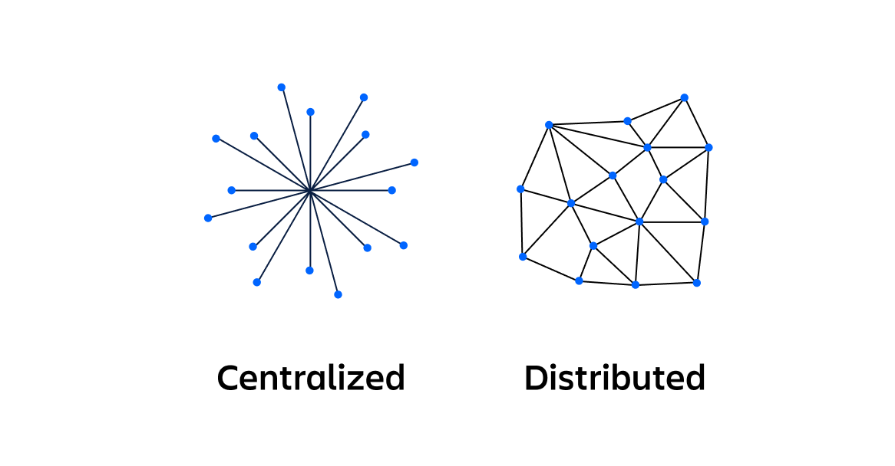
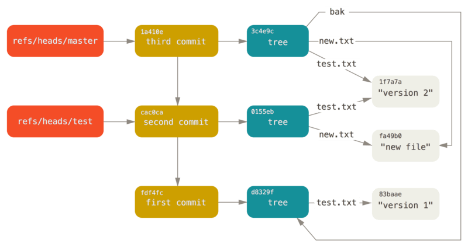
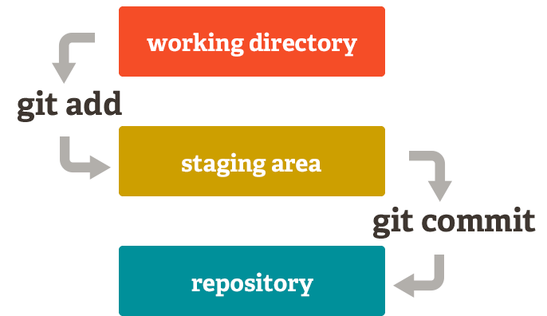
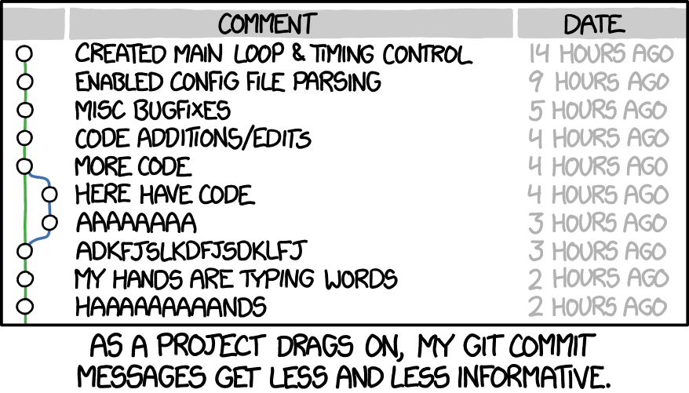
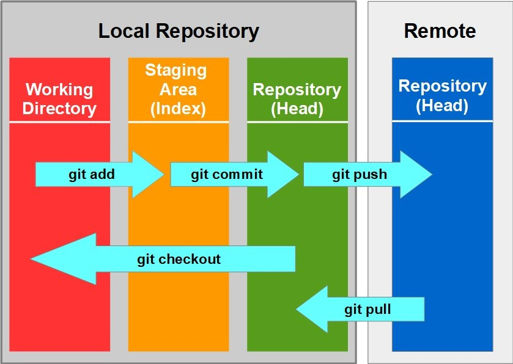

3. Let’s Git Started#
3.1. Life Before Git#
Let’s start with some history. Before git was invented, most people and companies used a concurrent version systems, or CVS as a way to store track and collaborate on code. CVS was one of the earliest widely used version control systems, first becoming popular in the late 1990s and early 2000s. It was developed to address the need for concurrent access to files among multiple developers working on the same project. CVS allowed developers to check out files, make changes, and commit them back to the central repository. However, CVS had several limitations, particularly in its handling of branching and merging. Branches in CVS were essentially separate directories, making it difficult to manage and merge changes between branches. This limitation became increasingly difficult to work with as projects grew larger, more widespread, and more complex. This problem was deeply felt in the open source community, where people from all over the world contribute to projects.
As needs evolved, so did the technology. And in 2005, Linus Torvalds, inventer of linux, began working on a way to tackle these problems.
The main difference between the two is that while CVS is centralized, git is a distributed system.

Source: https://www.atlassian.com/microservices/microservices-architecture/distributed-architecture
This provided more connectivity for widespread open source projects due to functions like branching and merging. But we’ll go into what those mean later.
3.2. GIT IS NOT GITHUB#
Repeat after me:
print("Git is *not* GitHub!")
Git is *not* GitHub!
3.3. Intro to Git#
So- then what actually is git? The man page of git describes itself as a “stupid content tracker”- in other words - it’s a source code management system. It allows for you to add and commit source code to a place where code is saved - a repository. Repositories are represented by trees - with one main branch, and many more smaller branches that are different versions of that main code that many different people can work on.

Source: https://www.nobledesktop.com/learn/git/git-branches
Why would you need something like branches? Well, sometimes you may want to work on a new feature or bug fix, but want to preserve the current stable version of your code. So, you create a new branch to further your project. And when you’re done with your branch, you can merge it into the main branch, or you can even merge it into another branch.
In Git’s content tracker, there are four main types of objects that play crucial roles in managing project history:
Blob objects: Represent the content of files and are identified by a hash of their content (e.g., 63ae94dae6067d9683cc3a9cea87f8fb388c0e80)
Tree objects: Function like directories, organizing blobs and other tree objects by listing file names along with references to their respective objects
Commit objects: Connect tree objects together, forming a snapshot of the project at a specific point in time. Commits include metadata such as timestamps and log messages, enabling tracking of project development and the ability to revert to previous states
Tag objects: Serve as containers referencing other objects and holding additional metadata. They are commonly used to mark specific points in history, such as release versions or significant milestones
Each object is uniquely identified by its hash (think back to that big blob of numbers and letters). Git also uses labels called refs to indicate the locations of commits, like branches, with the HEAD reference pointing to the current branch or commit being worked on, and tags for labeling important points in the project’s history.
Understanding these objects and labels is essential for grasping Git’s version control system and its management of project history. If you wanna read more about Git’s object model, check out this link: https://shafiul.github.io/gitbook/1_the_git_object_model.html

Source: https://git-scm.com/book/en/v2/Git-Internals-Git-References
Let’s go over some common git commands and what they do:
To initialze a repository in a folder: First make sure git is downloaded onto your device: https://git-scm.com/book/en/v2/Getting-Started-Installing-Git
Once git is set up, cd into the folder you will be working within and type:
git init
If you want to save the code you wrote to your repository, first run the git add command
git add .
OR
git add kite.py
OR (if you want to add multiple specific files)
git add factorial.py cherry.c battery.md
The period specifies everything in the folder, but if you want to only add a particular part files to what’s called the staging area, specify the file name

Source: https://davedodea.medium.com/git-commands-you-need-to-git-going-b98adc42182e
When you want to move out of the staging area and to the history of your repository, you will want to use git commit!
git commit -m "this is a comment"
Commit messages ues -m to attribute a commit message to each commit, a message that explains how you changed your code and why. These messages are important because they provide a lot of necessary context when looking at development history. Knowing what’s going on at different points of time in your code can be important if you need to revert back to different versions or if you’re collaborating and you want to understand what your team is doing. That’s why it’s important to right commit messages that are clear and descriptive. We will have a chapter on writing good commit messages in another chapter.

Source: https://cbea.ms/git-commit/
And finally- when you want to move your source code to github, you use the command
An example of what to avoid ;) image credit:
git push
Another important part of github is that it allows you to work collaboratively, which is often done through branching and merging. Git branching is a feature that allows developers to diverge from the main line of development and continue work on parallel tracks. Each branch represents an independent line of development, allowing multiple developers to work on different features simultaneously without interfering with each other’s code. Branches are usually merged into the main branch of development, usually called the main branch. Branches, as mentioned before, can be new features or for bug fixes, and are merged into the main branch.
To create a branch, you use the command
git branch new_branch
But note, that only creates the branch, to create a new branch and work on it, run
git checkout -b my-branch
OR
git switch -c my-branch
The checkout command switches you to a new branch, and the -b creates a new branch. And the switch command takes you to a new branch, and the -c creates it. Just like when you program, there are many different ways to approach things you want to accomplish in git!
To check what branch you’re on, use the command:
git branch
Once you’re done working on your branch, you usually want to merge back into the main branch, or into another branch. To do this run
git checkout bugfix #switching to the branch with the bug fix
git merge main #merge bugfix into main
or
git merge bugfix main
This will merge bugfix into main. Make sure you’re on the right branch when you’re merging! In some cases, you’re merge will happen seamlessly, but what if you are merging two branches that conflict? For example, what if two developers both create a python function that does two of the same thing, implemented in different ways. Another example of what may cause a conflict is if one developer deletes a file that another developer is editing. This conflict that arises during merges called a merge conflict. Merge conflicts can be resolved manually by the developer, deciding what implentation they feel is best for the project. Once they are resolved, the developer can commit the merge in the same way they would a code deletion/addition.
Now that we understand merging and branches, let’s look at some more git commands! Let’s start with git clone.
Git clone takes an already existing repository and places it in a new directory. It creates a copy of the existing directory in the new directory. It is especially useful if you’re working on someone else’s source code. If you find a repository you want to work on on Github, you can use the code button to get an ssh link, which allows you to create a copy of that repository. Just make sure you have ssh set up on your device! The command you would run is
git clone git@github.com:your-git-username/the-repo-you-want-to-clone.git
What if someone contributes to that repository, and you want those changes? You can run
git pull
To fetch the new repository changes, and have them locally.
What if you want to keep track of changes that you’ve been making? Here are some useful commands you can try out:
git status
git status is a command that tells you what’s in your staged area, a file that shows you what will go into your next commit.
git log
git log is a command that gives you your commit history, it prints your commits with their respective hashes, the author of those commits, date of the commit, and the message associated with that commited.

Source: https://www.linkedin.com/pulse/git-tutorials-commands-devopsuniversity-ex7pc
Well… now that we know what git is, what’s github?
3.4. Github#
Github is kind of like an extension of git. It is a web based interface that uses the version control system git. Github stores repositories online, and allows for developers to collaborate on projects. If you want to look for different projects to contribute to, publish your code, or simply explore what other people are working on, Github is a great place to get started. As of January 2023, GitHub had over 100 million developers and over 400 million repositories, making it a great place to see what other people are working on. If you’re interested in contributing to open source, Github is the place to start.
You can connect your local git repositories to Github, and push your personal projects to Github. Your page can be an active living programming portfolio, allowing you to showcase what you’re working on. But you can also work on projects that other people have made, you can even contribute to tools you use- like Linux or
Understanding git is an important part of working on open source or any collaborative project. If you want to practice some of these git commands and get started with the git workflows you need to work on open source projects, check out this repository: firstcontributions/first-contributions, which is designed for first time open source contributers!
Here are some links that are great places to start your Github journey:
Happy exploring!